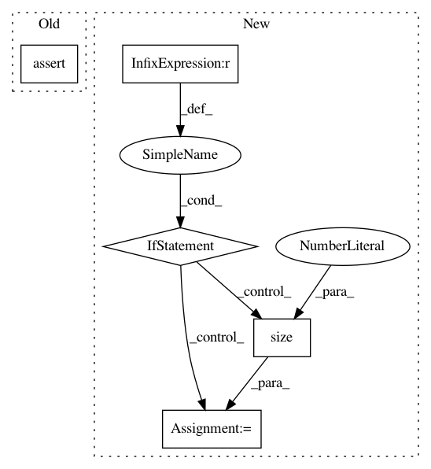

a0562f34c4b0225fe896b624c1754cfc5b0dac56,se3cnn/batchnorm.py,SE3BatchNorm,forward,#SE3BatchNorm#Any#,46
Before Change
fields.append(field.view(input.size(0), m * d, *input.size()[2:]))
assert ix == input.size(1)
if self.training:
assert irm == self.running_mean.numel()
assert irv == self.running_var.size(0)
if self.affine:
After Change
fields.append(field.view(input.size(0), m * d, *input.size()[2:]))
if ix != input.size(1):
fmt = "`ix` should have reached input.size(1) ({}), but it ended at {}"
msg = fmt.format(input.size(1), ix)
raise AssertionError(msg)
if self.training:
assert irm == self.running_mean.numel()
assert irv == self.running_var.size(0)
if self.affine:
In pattern: SUPERPATTERN
Frequency: 3
Non-data size: 5
Instances
Project Name: mariogeiger/se3cnn
Commit Name: a0562f34c4b0225fe896b624c1754cfc5b0dac56
Time: 2018-10-18
Author: michal.tyszkiewicz@gmail.com
File Name: se3cnn/batchnorm.py
Class Name: SE3BatchNorm
Method Name: forward
Project Name: OpenNMT/OpenNMT-py
Commit Name: b5486aaea994960688152e91fbab7699dc04e8c1
Time: 2017-08-14
Author: taolei@csail.mit.edu
File Name: onmt/Models.py
Class Name: Decoder
Method Name: forward
Project Name: mariogeiger/se3cnn
Commit Name: a0562f34c4b0225fe896b624c1754cfc5b0dac56
Time: 2018-10-18
Author: michal.tyszkiewicz@gmail.com
File Name: se3cnn/batchnorm.py
Class Name: SE3BNConvolution
Method Name: forward